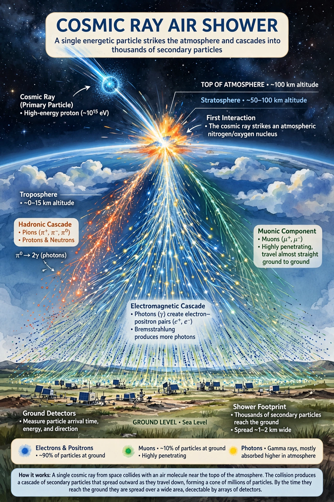

Cosmic ray

[Image: Illustration of a cosmic-ray air shower: a particle striking the atmosphere and cascading into many secondary particles]Cosmic rays are high-energy particles — predominantly protons and atomic nuclei, with electrons and antimatter — that originate in outer space and strike Earth's atmosphere, producing cascades of secondary particles (air showers). Discovered by Victor Hess in balloon flights of 1911–12 (radiation increased with altitude — Nobel Prize 1936), cosmic rays were the original particle-physics laboratory: the positron, muon, pion and kaon were all found in them before accelerators took over.
Their energies span an astonishing range: the spectrum follows a power law with features (the 'knee' ~10¹⁵ eV, the 'ankle' ~10¹⁸·⁵ eV) to beyond 10²⁰ eV — the 1991 'Oh-My-God particle' carried the kinetic energy of a well-thrown baseball in a single proton — in excess of the Greisen–Zatsepin–Kuzmin limit for protons travelling far through the Cosmic microwave background, implying nearby sources. Galactic cosmic rays are attributed mainly to supernova remnants (confirmed by gamma-ray observations of pion decay, 2013); the highest-energy events are extragalactic, their sources still uncertain. The Pierre Auger Observatory (3,000 km² in Argentina) and Telescope Array study the extreme end.
Effects
Cosmic rays ionise the atmosphere (a minor but real factor in cloud nucleation research), mutate DNA (a background of evolution and a hazard to astronauts and aircrew), upset electronics (single-event upsets), and enable muon tomography of pyramids, volcanoes and damaged reactors. Their secondary muons penetrate kilometres of rock — which is why deep-underground laboratories are needed to escape them in rare-event physics.